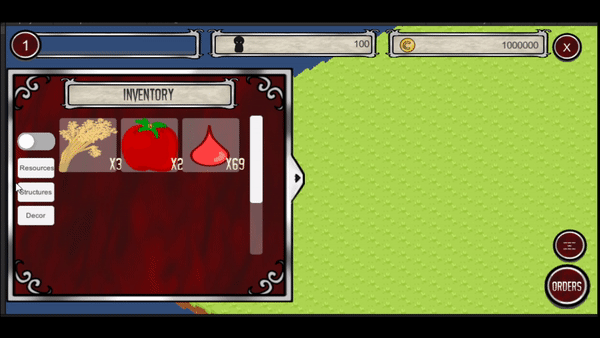

Vampizza
Hello!
Here to check out our current progress? Awesome! Scroll below to check some visuals and explanations out! Looking for information on how to join the project or what the project is? Check out our documentation to learn more about Vampizza and our goals.
Pase 1 of 4
Developer/Artist Recruitment
We still need help. If you're interested feel free to join the discord link found on the documentation site. Programmers, Artists, Animators, Etc are all still very much welcome to hop on in on the summer project.
Main Menu
Current progress regarding the main menu includes a working "new game" button and exit button as well as the menu retaining its position/mindfulness of other objects with changes in resolution. Check out a visual below:

Camera
Players can navigate the plain (within bounds) using their mouse, arrow keys or wasd keys. They may also zoom using the +/- keys and their mouse scroll wheel. Check out a visual below:

Player Attributes
Players now have (in the background) attributes associated to them such as the number of citizens within their town, their town name, what level they are, etc. Currently because there isn't gameplay or visuals regarding these mechanics yet, there isn't a visual to view.
Inventory Panels
A very primitive set up with the inventory with displaying what is stored is implemented. It allows players to filter based on the type of resource as well as scroll through and navigate their resources/structures/decor items. In a soon update, there will be a way for users to navigate to a shop to purchase structures and items. Check out a quick visual below:
What's Next?
Next step is the implementation of dragging and dropping structures on to the plain as well as collecting resources for the inventory. There will also be more campaigns for more artists to hopefully allow a kickstart on the art for the project and unique sprites. This is to mark the beginning of phase 2.